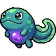

 Psychic
PsychicTap a stage to read its story.
Round and green with a stubby tail, Vynling looks more like a cheerful little salamander than a serpent. Its body is a rich leaf-green with bright teal spots, and a glowing purple orb sits at its belly like a swallowed moon. It tumbles through the Bug Thicket's damp undergrowth with clumsy enthusiasm, pausing to press its belly-orb against strange leaves to taste whether they carry useful words. When curious, it freezes completely still and stares.
Field note: Vynling swallows a tiny glowing spore every day - the spore feeds the belly-orb until the serpent grows large enough to glow on its own.
Bug Thicket. Vynling and its family are found in the Bug Thicket. See everyone who lives there.
Share a Bond Food that matches its types to become friends. Vynling loves:
A Bond Food is not a trick. It joins your spirit with the Kimuro's spirit, and only when it chooses you.
Print the Kimuro adventure packs: mazes, cards, a board game and Bond Mark medals.
See the printable packs